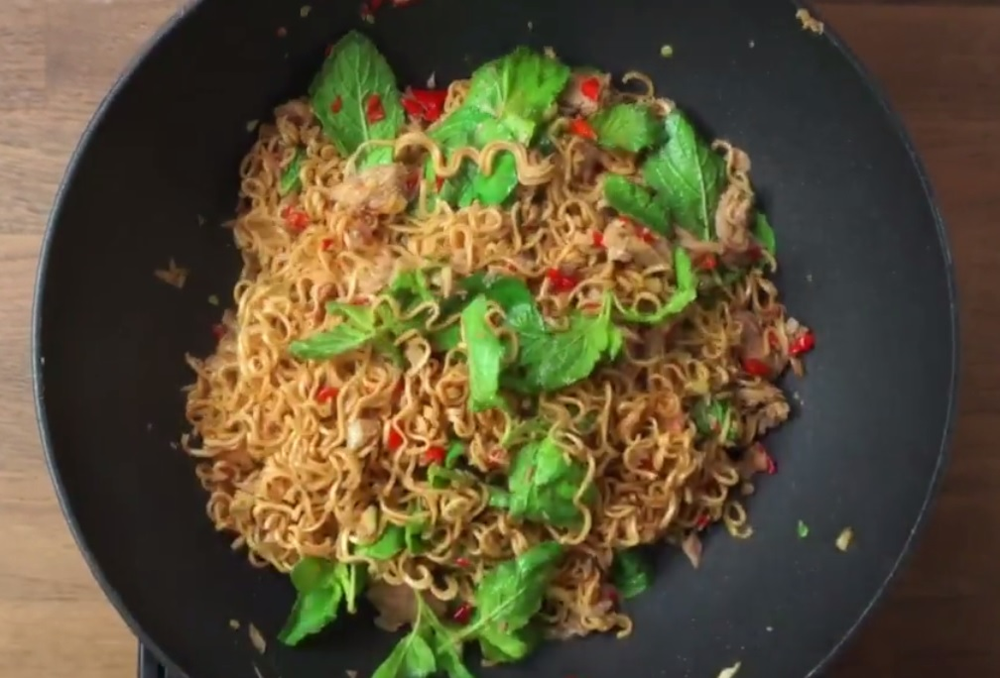

ผัดมาม่า

ส่วนผสม
- มาม่ารสที่ชอบ
- หมูสับหรือหมูชิ้น
- ผัดคะน้า ผักบุ้ หรือกวางตุ้ง ตามชอบ
- น้ำมันพืช
- ไข่ไก่
วิธีทำ
- ลวกเส้นมาม่าให้พอนิ่มเหนียว จากนั้นเทน้ำออกจากกระทะและใส่น้ำมันพืชลงไปผัดเส้น
- ตอกไข่ลงไป ตามด้วยเนื้อสัตว์ และผัก
- ปรุงรสตามชอบ อาจใช้ผงชูรสจากมาม่าด้วยก็ได้
ขอบคุณข้อมูลสูตรอาหารนี้จาก
กลับไปหน้าแรก